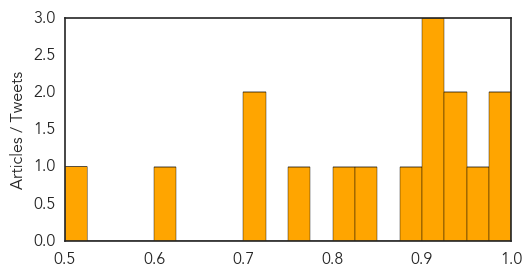
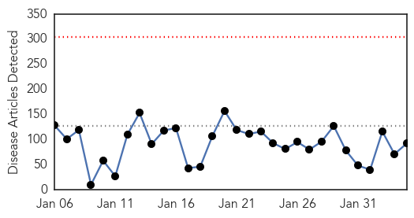
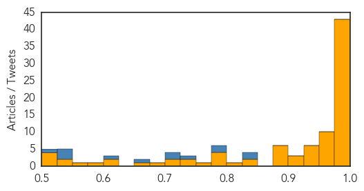

Influenza
30-Day Web Trend
0 alerts, 0 warnings

30-Day Twitter Trend
0 alerts, 0 warnings

Article Locations

Article Confidences
Top Articles:
- 0.995
- Prevention measures of influenza
- 0.994
- Maricopa County Health Department reports first pediatric death from flu for 2015
- 0.966
- Jordan suspends import of pet birds from Nigeria over bird flu
- 0.936
- Bird Flu Is Under Control – Minister
- 0.933
- Scientists and Doctors May Soon Be Able To Forecast Flu Patterns
- 0.925
- DODDS worker in Wiesbaden treated for tuberculosis
- 0.919
- Rexall, AMREF immunizing Ugandan children for every Canadian flu shot
- 0.910
- Low severity AI found at UK chicken farm
- 0.892
- Plateau Government Destroys 7 Poultry Farms, Kills 20,000 birds
- 0.838
- All four major Triad hospitals lift flu restrictions
- 0.801
- News Scan for Feb 04, 2015
- 0.755
- Flu and the cold blamed for increase in deaths this winter
- 0.717
- 20,000 chickens killed, 7 farms destroyed in Plateau
- 0.701
- Students without current vaccines to be sent home Feb. 18
- 0.618
- Crisis continues with 523 patients on trolleys
- 0.525
- Defra raises UK bird flu risk level
Top Tweets:
-
No tweets found for Feb 04, 2015
Ebola
30-Day Web Trend
0 alerts, 0 warnings

30-Day Twitter Trend
2 alerts, 0 warnings
Article Locations
Article Confidences
Top Articles:
- 1.000
- Number of new Ebola cases rises for first time in 2015
- 1.000
- Person in Dane County being monitored for possible Ebola symptoms
- 0.999
- Estimate of 1.4 Million Victims Never Materialized; Now, CDC Rethinks How It Talks About Disease Outbreaks
- 0.999
- Person in Dane County being monitored for possible Ebola symptoms
- 0.999
- Ebola Defeated: Liberia schools re-open February 16 …after 3605 deaths
- 0.999
- MSF says lack of public health messages on Ebola 'big mistake'
- 0.999
- US: Ebola virus sent to lower-tier lab likely not dangerous
- 0.999
- Sierra Leone to reopen schools after 7-month Ebola shutdown
- 0.998
- UPDATE: Wisconsin traveler triggers Madison Ebola response, moni
- 0.998
- GP who swapped Sheffield surgery for Sierra Leone tells of fight against Ebola
- 0.998
- Building on the ashes of Ebola to bring about a wealthier and more prosperous Sierra Leone
- 0.998
- Ebola donations are 'not reaching affected countries'
- 0.998
- WHO reports rise in cases of deadly virus in 2015
- 0.998
- WHO: Ebola Cases Rise Again in West Africa
- 0.998
- WHO names Ebola response chief. Health. Tengrinews.kz
- 0.998
- Military Ebola mission in Liberia coming to an end
- 0.997
- Ebola: large-scale vaccine trials under way in Liberia
- 0.996
- How the USA and the UN Helped Defeat Ebola in West Africa
- 0.996
- Too early to lift travel restrictions in Sierra Leone?
- 0.995
- Ebola: UN health agency says large-scale vaccine trials under way in Liberia
- 0.995
- Military Ebola mission in Liberia coming to an end
- 0.995
- Ebola Donations Slow to Reach West Africa
- 0.994
- Patient in Madison being monitored for Ebola
- 0.994
- Recounting The Untold Ebola Stories From Sierra Leone
- 0.994
- 1.5 million euros for local health facilities and health prevention in Guinea
- 0.994
- Three Realities of Ebola
- 0.994
- Ebola: 1.5 million euros for local health facilities and health prevention in Guinea - Guinea
- 0.994
- Ebola: 1.5 million euros for local health facilities and health prevention in Guinea
- 0.992
- New Ebola Cases Show First Rise In 2015
- 0.992
- PM Promises Medal For Brits Battling Ebola
- 0.990
- Cambodia: A Tale of Two Outbreaks
- 0.989
- Ebola cases on the rise for first time this year, WHO says
- 0.989
- Row over Germany′s Ebola mission
- 0.989
- Delay in funds may have helped Ebola spread, study says
- 0.989
- MSF says lack of public health messages on Ebola big mistake: TRFN
- 0.988
- Ebola cases on rise for first time this year, WHO says
- 0.986
- U.N. Body Demands Debt-Cancellation for Ebola-Impacted Countries
- 0.986
- Fewer Than Half of Ebola Pledges Have Reached Area in Need
- 0.984
- Ebola response in Liberia rolls on - Liberia
- 0.984
- 6,481 People Buried in Western Area since October 2014
- 0.984
- Guinean doctor who survived Ebola works to ensure proper infection prevention practices
- 0.979
- Unsafe Local Burial Practices In Guinea Have Started Another Round of Ebola Infections
- 0.976
- Soldiers return after helping tackle Ebola horror
- 0.975
- DNA tests confirm Marwan killed
- 0.974
- United Nations World Food Programme - Fighting Hunger Worldwide
- 0.974
- Hollande hails encouraging results of Ebola treatement trial
- 0.973
- David Cameron plans new medal for UK 'heroes' fighting Ebola in Sierra Leone
- 0.967
- 'Weaponized Ebola' Made By Terrorists Is A Real Threat
- 0.965
- Liberia Begins Trial of Experimental Ebola Vaccines
- 0.960
- Thermo Fisher contributes to Ebola screening program
Showing top 50 articles...
Top Tweets:
- 0.848
- Ebola is not a death sentence. EbolaStory
- 0.826
- At current rates of spread looks like Ebola vaccine trials in Liberia will be a bust. Sierra Leone maybe not. Which vax will test?
- 0.779
- 12 patients free of Ebola after receiving treatment run Ebola Treatment Unit (ETU) in Guineahttp://t.co/TgsAYslmW2
- 0.778
- RT: The outbreak of Ebola in West Africa was not random - decades of poverty + civil conflict created a susceptible state http:…
- 0.748
- RT: There were 124 confirmed Ebola cases in the 3 countries in 7 days to 1 February. That week alone would be 7th biggest outbreak…
- 0.708
- RT: .@TackleEbola: Meet a Liberian mom now supporting children touched by the Ebola virus that almost claimed her life http://t…
- 0.708
- Liberia. Evolution of Ebola Virus Disease from Exotic Infection to GlobalHealth Priority Mid-2014 http://t.co/EigeKMyEnf
- 0.652
- International donations to the Ebola virus outbreak: too little too late? @bmj_latest http://t.co/P8v2ZQzrSo
- 0.621
- Ebola outbreak: risks posed to Europe are lower as number of cases decreases but travelers esp HCWs still at risk http://t.co/HP7OqQNI17
- 0.547
- Timeline of Response to the Ebola Outbreak http://t.co/U7Zafo9XlM
- 0.543
- [SLTIMES] Liberia: New Ebola Cases Reported in Liberia http://t.co/NW3TP7uvaT EbolaNews
- 0.539
- Within 4 days Theophilus & his friends were showing early symptoms of Ebola – diarrhea vomiting. EbolaStory
- 0.514
- [UNNEWS] Ebola: UN health agency says large-scale vaccine trials under way in Liberia http://t.co/AUrLY9MhAi EbolaNews